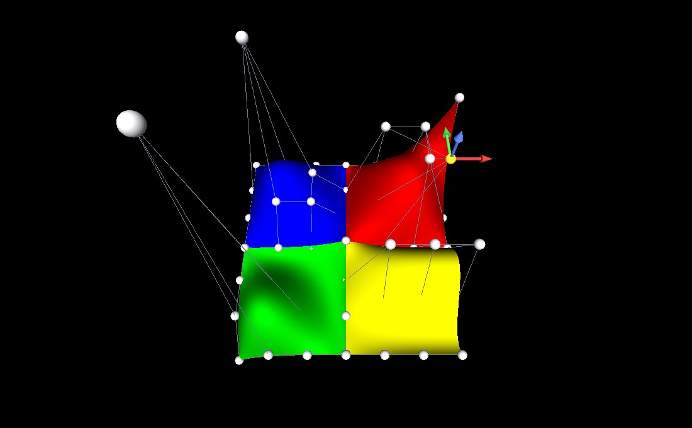
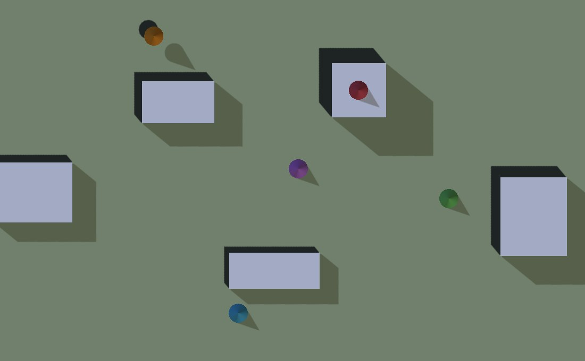

A track editor, a level editor and a scene inspector
all want the same things of the engine: a pointer that does a different job in
each tool, a view from straight above to draw on, the point on the world under
the cursor, and a way to drag it. None of that is about tracks, levels or
scenes, so it lives in OpenGLContext.edit and the second editor
does not have to write it again.
Nothing here is needed to play a world, so a shipped game imports none of it.
An editor's pointer does a different thing in each tool — placing a point, dragging one, measuring, painting — and the camera wants the same pointer. The rule is that the tool in force is asked first and the camera gets whatever the tool did not want, so a tool that only cares about the left button leaves the right one orbiting.
from OpenGLContext.edit.tools import Pointer, ToolManager, ToolMode
class PlacePoint(ToolMode):
def on_press(self, pointer):
if pointer.button or not pointer.on_surface:
return False # not ours: let the camera have it
self.route.append(pointer.world)
return True
tools = ToolManager([PlacePoint(name='place'), DragPoint(name='drag')])
Every hook — on_press, on_drag,
on_release, on_move, on_key — returns
whether the tool used what it was given, and the base class uses nothing. So a
subclass that overrides one hook leaves the rest of the pointer alone rather
than swallowing it.
A tool that takes a press keeps the pointer until the release.
A drag that wanders off whatever started it still ends where it should, and the
tool cannot be switched out from under a gesture it is half-way through:
select() answers False while one is going on. Escape abandons a
gesture (ToolMode.cancel) and is left for the camera when there is
nothing to abandon.
enter and leave bracket the time a tool is in
force, which is where a preview goes on screen and comes off again.
A strip down the side of the window, one button per declared tool, the one in force lit, and a click puts the pointer into that tool. It is a panel rather than a HUD layer -- a HUD takes no events -- and it is not modal, so a click that misses it reaches the world underneath.
from OpenGLContext.ui.toolpalette import ToolPalette palette = ToolPalette(tools=tools, reserved=MENU_BAR_ROOM) context.overlays.push(palette) status.reserved = (MENU_BAR_ROOM, 0.0, 0.0, palette.room(metrics))
reserved is how much of the window's top something else has
already taken, in reference pixels, so the strip starts under a menu bar rather
than through it; edge is 'left' or
'right'. room(metrics) answers how much width the
strip wants, also in reference pixels, which is what a
HUDLayer.reserved is told so its read-outs stay clear of it.
A button reads the manager rather than keeping a copy, so a tool chosen by a
keyboard shortcut or by the application lights the same button a click would
have, and a manager that refuses the change -- which it does part-way
through a gesture -- leaves the strip saying what the pointer is really doing.
Call rebuild() when the set of tools changes.
A press anywhere on the strip is the strip's, including the gaps between buttons: a palette stands over a document the pointer also draws on, and a click that missed a button by two pixels must not put a point down on the map underneath.
A Pointer is where the cursor is on the screen
(x, y) and in the world: world
is the point on whatever surface is under it, or None over the
sky. on_surface, shifted, controlled and
alted save a tool from unpacking a modifier triple.
Where the user clicked on the world is already read back by the pick. The selection pass writes depth as well as an object id, so a mouse event arrives knowing how far away what it hit was; unprojecting that gives the point on the surface. It is exact, it costs nothing extra, and it works for streamed terrain because terrain writes depth like any other geometry.
from OpenGLContext.edit.surface import pointer_from pointer = pointer_from(event) # pointer.world is where they clicked
Dragging cannot use that depth, because once something is being dragged the depth under the cursor is the thing being dragged. A drag runs against a plane instead — usually the level plane through where it began, so a point moves across the ground without climbing whatever it passes over:
from OpenGLContext.edit.surface import horizon_plane, ray_from, ray_plane origin, direction = ray_from(event) moved_to = ray_plane(origin, direction, *horizon_plane(started_at[1]))
The ray is taken from the near and far planes rather than from the camera's position, so it is right under any projection: an orthographic map view has no eye point for rays to come from, and its rays are parallel.
The ground's slope comes from neither. Picking gives a point, not a
normal; the normal is the gradient of the height function, which an editor has:
surface_normal(height_fn, x, z).
A drag against the ground plane is right for a point that lives on the ground. A point in the air — a control point, a light, a camera — needs a direction chosen for it, and that is what a gizmo is for: three arms stand at the point, one per axis, and grabbing one holds the whole drag to that axis. The point goes up, or east, and not somewhere diagonal that the eye ray happened to sweep through.
from OpenGLContext.edit.gizmo import TranslationGizmo
gizmo = TranslationGizmo(size=1.5)
group.children = list(group.children) + [gizmo.node]
gizmo.attach(point) # the arms appear there
def OnPress(self, event):
if gizmo.press(event) is not None: # landed on an arm: a drag has begun
return
def OnDrag(self, event):
moved = gizmo.drag(event) # None when no arm is held
if moved is not None:
self.put_it(moved) # write it wherever it belongs
The arms are ordinary scenegraph nodes, so the pick hit-tests them
like any other geometry and there is no second hit-test to keep in step
with what is drawn. press reads the axis off the node path the
selection pass resolved; release ends the drag and
cancel abandons it, putting the point back where it was grabbed,
which is what Escape does.
A gizmo works in the coordinates of the group it is put in. Editors put it beside the thing it is moving, and that group is often scaled or turned, so a drag measured in window pixels has to come back as a distance in the units the point is stored in. The gizmo takes the transform from the same node path, pushes its anchor and its axis out to root coordinates for the arithmetic, and answers in the units it was asked in.
That arithmetic is axis_parameter(origin, direction, anchor, axis):
the closest approach of the eye ray to the arm's line, as a distance along the
arm. It answers None for a ray running along the arm, where every
point of it is equally near and the pointer is not saying where to go — so
an edge-on drag holds still rather than lurching. What is recorded on the press
is how far along the arm the pointer took hold, and the rest of the drag is
measured from there, so the handle does not jump to the cursor.
Arms are a fixed length in the surrounding group's units, so a gizmo far from the camera is drawn small.
A NURBS surface is one shape, so a pick aimed at it answers "the surface"
however carefully it was aimed: there is nothing in the frame that is
the third control point. ControlNet supplies one — a marker
standing on every control point — so a picked marker is a control point by
name, and moving it is an edit to the geometry.
The lines between the points matter as much as the points. A
marker on its own says where one control point is; the row and the column it
lies on say which points it is between, and that is what tells a
designer what a pull is about to do — the cage bends first and the surface
follows it. So the net draws a polyline along every row and every column of the
control grid (one polyline through the lot, for a curve) and moves them with the
points. The cage is pickable=False: it is there to be read rather
than aimed at, and a line lying over a marker must not swallow a click meant for
the point or the surface behind it (see
click-through picking).
from OpenGLContext.edit.controlnet import ControlNet
net = ControlNet(shape.geometry) # any node with a controlPoint field
group.children = list(group.children) + [net.node]
...
index = net.index_for(event.getObjectPaths())
if index is not None:
net.select(index) # the marker takes the selected colour
gizmo.attach(net.point(index))
...
net.move(index, gizmo.drag(event)) # the surface retessellates
move assigns the controlPoint field rather
than writing through it, because the cached tessellation depends on that field
and a cache watches for it being set; an in-place write would leave the old
surface on screen under the new net. controlPoint is the field name
VRML97 gives both NurbsSurface and NurbsCurve, so a net
serves either.
The markers share one geometry and one appearance, so a whole net is a single instanced draw rather than a draw per point (see Instanced rendering), and the cage is a second. The selected marker is the exception: it is given its own appearance for as long as it is selected, which is both what takes it out of the batch and what makes it visibly the one being worked on.

python tests/molehill_edit.py
— the Molehill surfaces with
their control net made draggable. Click a marker to select it, then drag one
of the three arms; the surface retessellates as the point travels. The red
hill here has been pulled three units east along its own x
axis. The two markers standing well above everything, with their long cage
lines, are the control points Molehill raises the green and blue hills by:
the cage is what makes that legible. Escape abandons a drag, or puts the
handle away.A map lit from straight overhead is flat: every surface faces the light equally, and a ridge and a valley come out the same colour. A map is read, so the ground is shaded by which way it faces relative to a fixed low sun — the cartographic hillshade — and the shape of the land is legible with no shadow crossing the line drawn on it.
from OpenGLContext.edit.relief import shade_colors colors = shade_colors(colors, normals) # then draw the mesh unlit
The sun is a convention, not a light: it sits in the north west at 45°, where every printed relief map has put it for a century. Lighting relief from anywhere east of north makes hills read as hollows, and the illusion is strong enough to send a road along the wrong side of a ridge.
The shading goes into the vertex colours and the mesh is drawn unlit, so a plan view needs no lights, builds no shadow maps, and costs one dot product a vertex.
| Argument | Means | Default |
|---|---|---|
azimuth | degrees clockwise from north | 315 |
altitude | degrees above the horizon | 45 |
ambient | light reaching ground turned away from the sun, so nothing on the map goes to black | 0.35 |
exaggeration | how much steeper the land is made before it is lit | 4 |
The exaggeration matters more than it looks. Country a road can be built through is gentle — a one-in-twenty slope is a hard climb for a car and almost nothing to the eye — so shading it honestly leaves a flat green sheet. It is in the shading only: the ground is drawn at the height it really is, and a contour still says what that height is.
hillshade(normals, ...) answers the shading alone, from 0 to 1,
for a caller colouring the ground some other way; steepen(normals, k)
is the leaning-over on its own.
A road held to a grade round a hillside runs along an iso-height, so an editor that can put a point on one is the difference between drawing that road and approximating it. The shortest way to a contour is straight up or down the hill, which is a step along the gradient:
from OpenGLContext.edit.surface import height_gradient, snap_to_height x, z = snap_to_height(height_fn, x, z, height=None, interval=25.0, reach=250.0)
height is the elevation to land on; with none, the nearest
multiple of interval — the contour the designer is looking at.
reach caps how far the point may be moved, because a contour half a
kilometre away is not what the pointer meant and a snap that drags a point
across the map is worse than no snap. Flat ground has no nearest contour, so the
point stays where it is.
It is exact in one step for ground that rises evenly and takes a few more
where the ground curves under it. height_gradient is the pair of
rates on its own, for a caller that wants the slope rather than the snap.
A route is drawn on a map. The camera looks straight down and the projection is orthographic, so a metre is the same number of pixels wherever it is on the screen and a click at the far end of a straight means the same thing as a click at the near end. A perspective view cannot promise that.
from OpenGLContext.edit.mapview import MapView, MapViewPlatform view = MapView(centre=(0.0, 0.0), span=1200.0) # 1200 m down the window context.platform = MapViewPlatform(view)
span is how many metres fit down the window's height,
so a wider window shows more world rather than the same world stretched. North
(-z) is up the screen and east (+x) is right, as a map
has it.
| Call | Answers |
|---|---|
world_from_screen(x, y, viewport) |
the world (x, z) under a window pixel — where the pointer
is |
screen_from_world(point, viewport) |
where to draw a marker for a world point |
metres_per_pixel(viewport) | the scale it is drawn at |
pan(dx, dy, viewport) |
drag the map by a pointer movement; the world goes with the pointer |
zoom(factor, at=..., viewport=...) |
scale it, holding the world point under at still |
frame(minimum, maximum, viewport) |
put a region on screen, wholly inside the window |
Moving the map is also a tool in its own right, so a designer can say "just move the map" and have the drawing tool stop guessing:
from OpenGLContext.edit.maptools import PanTool
tools = ToolManager([DrawTool(...), PanTool(view, context.getViewPort,
on_change=map_moved)])
The drag is measured from where the pointer last was rather than from where it started, because the map moves underneath it and a fixed origin would make it accelerate away.
MapViewPlatform reads the view rather than copying it, so
panning or zooming the map is what moves the camera and there is no second copy
of where the editor is looking to fall out of step with the first.
A plan view is the right thing to draw on and the wrong thing to
judge on. Shading and contours answer "how high is that"; they cannot
answer "does that look right", which is the question a landscape is finally
judged by. OrbitView is the camera for it — a point on the
ground it looks at, and a heading, a pitch and a distance to look from:
from OpenGLContext.edit.orbitview import OrbitView, OrbitViewPlatform view = OrbitView(centre=(0.0, 0.0), ground=42.0, distance=800.0) context.platform = OrbitViewPlatform(view, context.getViewPort()) ... view.orbit(dx * 0.4, dy * 0.4) # a drag: turn and rise, in degrees view.dolly(1.0 / 1.25) # a wheel notch: in or out
heading is degrees clockwise from north, and zero puts the
camera to the south looking north — the way up a map is read.
pitch is degrees above the horizontal and defaults to the
three-quarter view somebody means by "let me look at it": high enough to read
the plan, low enough to read the relief. Orbiting leaves the subject where it
is, because an orbit that moved what it was looking at is a pan and loses the
thing being inspected; the pitch stops short of overhead and of the horizon,
where a camera has no unique up-vector and sees the ground edge-on.
frame(minimum, maximum, viewport) looks at a region from far
enough off to see all of it, and look_at moves the subject.
OrbitViewPlatform reads the view rather than copying it, as the map
platform does; setting a position on it works out the heading, pitch
and distance that put the camera there, so anything that moves a camera by
position — a bookmark, a saved viewpoint — moves this one.
An editor holds both and swaps its platform between them: one
window, one scene, two cameras. Rendering both at once is a different piece of
work — the render pass takes the whole window, so a split view means a
viewport and a scissor per pass and a second shadow-map and selection pass to
pay for.

python tests/editing_demo.py
— a world edited in the plan view: five markers put down at the point
under the pointer, one of them then dragged 66 m across the ground, by
tool modes that are asked for the pointer before the camera is. Nobody moves the mouse
while a screenshot is taken, so the demo drives its own clicks and its drag
through the pick. Press o for the three-quarter view and
m to come back; 1, 2 and
3 choose the drop, move and pan tools; u takes
back what the tool in force last did.Every scripted click is aimed at a world point, turned into a pixel by
screen_from_world and answered by the pick, so the pair the demo
prints is a round trip:
click pixel (674, 510) <- world (22.0, -30.0) drop marker 2 at world (21.88, 20.00, -30.00)
That one is aimed at the middle of a 20 m block, so it comes back 20 m up and the marker stands on the roof.
What an application writes is the tool and the routing that gives it the pointer first:
from OpenGLContext.edit.surface import pointer_from
from OpenGLContext.edit.tools import ToolManager, ToolMode
class DropMarker(ToolMode):
"""Put something on the world where the pointer is."""
def on_press(self, pointer):
if pointer.button or not pointer.on_surface:
return False # not ours: the camera can have it
print('drop at %.2f, %.2f, %.2f' % tuple(pointer.world))
return True
class Editor(BaseContext):
def OnInit(self):
self.tools = ToolManager([DropMarker(name='drop')])
...
def ProcessEvent(self, event):
"""The tool in force is asked before the camera is."""
if getattr(event, 'type', None) == 'mousebutton' and event.state:
if self.tools.press(pointer_from(event)):
return None # taken, so it never reaches the camera
return super(Editor, self).ProcessEvent(event)
Returning without calling up the chain is the whole of "the tool took it":
the movement sampler reads events on their way past
(ViewPlatformMixin.ProcessEvent), so a press a tool has taken is a
press the camera never hears about. Everything the tool leaves — the right
button, the wheel, the keys it does not answer for — carries on to
whatever handled it before.
plans/RAYCAST-PICKING.md.